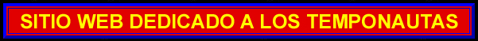

|
El Dominio del Tiempo
La Filosofia del Viaje Temporal
La Maquina del Tiempo Norteamericana
El Visor Temporal o Cronovisor
|
| Contacteme si desea ampliar conceptos o intercambiar opiniones: |
© Copyright Dominus Temporis (Actualizado 07/abril/2021)